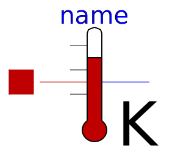
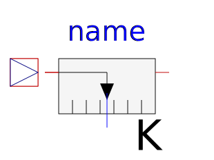
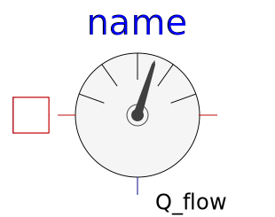

.
Modelica
.
Thermal
.
HeatTransfer
.
Sensors
Information
Contents
Name
Description

TemperatureSensor
Absolute temperature sensor in Kelvin

RelTemperatureSensor
Relative Temperature sensor

HeatFlowSensor
Heat flow rate sensor
ConditionalFixedHeatFlowSensor
HeatFlowSensor, conditional fixed Temperature
Generated at 2020-06-05T07:38:22Z by
OpenModelica 1.16.0~dev-420-gc007a39